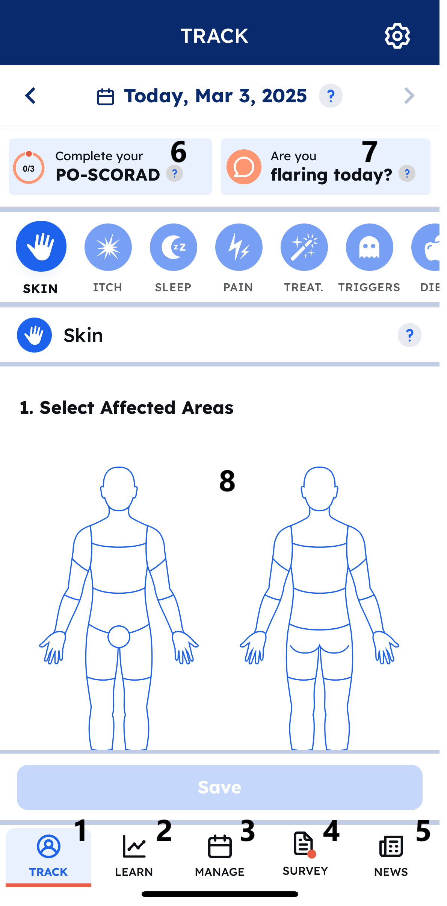

Health IT Solution Prototype
A student-designed digital health concept exploring how remote care tools, structured data, and patient usability could work together in a more practical telehealth experience.
This project explored a health IT concept for improving remote care experiences through better data collection and clearer clinician-facing information. The focus was not on shipping a production medical product, but on designing a more thoughtful system: one that considered patient input, structured health data, and the challenge of making remote interactions more useful. It helped me practice health informatics thinking, systems design, and translating healthcare problems into product concepts.

- Health informatics systems thinking
- Patient-centered design
- Concept development
- Workflow planning
- Technical communication